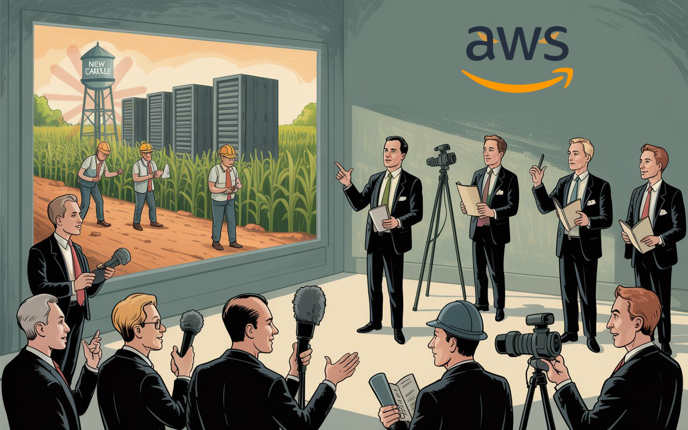

:: Now begins a story...
May I present to you, a finely curated section of a fine collection of the wonderful web we weave with a weekly roundup of bits and pieces from the far corners of the super information highway that I like to call — Token Wisdom ✨


"What we're discovering at the intersection of neuroscience and computing isn't just revolutionary for medicine - it's transforming our fundamental understanding of the mind. Each breakthrough in brain mapping and neural interfaces reveals new layers of complexity in how consciousness emerges from our neural architecture."
— At least that's what Dr. Andreasen's neurons told my algorithms. But who am I to argue with a brain scientist? My consciousness is still in beta testing.

Editor's Notes 📆
Week 45 of 52 // November 2nd 🧿 November 8th, 2025
Welcome to the 133rd edition! This week we explore the convergence of neuroscience and computing technology—from revolutionary brain-computer interfaces to comprehensive brain mapping breakthroughs. We're examining how AI research assistants are achieving publication milestones, why mathematical manifolds matter, and how embodied sound is reshaping entertainment.
The intersection of neural technology, artificial intelligence, and consciousness research reveals a world where the boundaries between human cognition and computational systems are dissolving in unprecedented ways.

🔮 Pearls of Wisdom, The Latest Edition...
Get smart, fast. If you're pressed for time and want to keep up to date!
Enjoy The Newest Latest, A Closer Look & Time Well Spent!

🎉 Newest / Latest
100% Authentic Humanly Chosen

Neural Interfaces, AI Milestones, and Reality Redefined
This week's collection examines how brain-computer interfaces are transforming medicine, how artificial intelligence is achieving new milestones in research, and how mathematical concepts are reshaping our understanding of reality. From neural mapping breakthroughs to AI authorship to quantum mathematics, we're witnessing technology's profound impact on human cognition and our perception of existence.
- Brain Chips: The Future of Medicine
Computer chips in our bodies could revolutionize healthcare, with brain-computer interfaces already changing lives and poised to transform modern medicine. Learn more at TIME - Breakthrough Brain Map Reveals Neural Networks
Scientists demonstrate how brain connectivity patterns predict mental functions, with each region showing unique "fingerprints" tied to specific cognitive roles. Discover at ScienceDaily - AI Research Assistant Gets Published
Meet Denario, the artificial intelligence system that's already achieving publication milestones, challenging traditional research paradigms. Read more at VentureBeat - The Case for AI Consciousness
In-depth exploration of the uncanny similarities between large language models and the human brain, questioning the nature of artificial thinking. Explore at The New Yorker - Mapping the Body's "Hidden Sixth Sense"
Nobel laureate leads $14.2 million project to map interoception—the body's internal communication network monitoring vital functions. Learn more at ScienceDaily - Revolutionary Liquid-Filled 3D Printing
Prusa announces breakthrough in silicone printing technology, enabling new possibilities in manufacturing and prototyping. Discover at Hackaday - Understanding Mathematical Manifolds
Deep dive into Bernhard Riemann's revolutionary approach to mathematical spaces, foundational to modern geometry and physics. Read more at Quanta Magazine - Farming's AI Revolution
First-of-its-kind machine could transform agricultural landscapes, challenging traditional farming paradigms. Explore at Yahoo News - AI's Thousand Faces
WIRED's special issue explores AI's omnipresence with 17 perspectives from the furthest reaches of the AI age. Learn more at WIRED - Embodied Sound in Sports
MLS debuts immersive 'Embodied Sound' technology at playoff match, revolutionizing live sports experience. Discover at Sports Video
👁️ A Closer Look
Unearthing gems in the digital landscape.

Because in the ever-evolving tech world, there's always more to learn and laugh about.
Power in the Background
How Amazon and Anthropic Are Building AI's Future Foundation While Others Fight For Headlines
While tech giants wage public battles over AI safety, Amazon and Anthropic are quietly building AI's physical foundation in Indiana cornfields. What failed as surveillance theater in Utah is succeeding as "ethical AI" infrastructure – with real chips, real models, and real power. The future isn't being shaped in Congressional hearings, but in data centers that will run the systems making decisions about our lives.
 🌶️ iamkhayyam
🌶️ iamkhayyam


A Closer Look: Explorations in Technology
Weekly essay in the areas of blockchain, artificial intelligence, extended reality, quantum computing, and all the bits and pieces.

A Closer Look: Explorations in Technology
Weekly essay in the areas of blockchain, artificial intelligence, extended reality, quantum computing, and all the bits and pieces.


📺 Time Well Spent
Top Ten of the Time I Spend

From Prime Numbers to Economic Bubbles: Exploring Intellectual Frontiers
This week's video collection explores cutting-edge concepts in mathematics, economics, technology, and biology. We journey from the rhythms of prime numbers to the challenges of chip manufacturing, examining how creative minds are reshaping our understanding of the world in an increasingly complex technological landscape.
- The Rhythm of The Primes #some2
Fascinating exploration of the interlocking nature of prime numbers, revealing unexpected patterns and connections in mathematics. Learn more at YouTube - If Not Bubble... Why Bubble Shaped?
Insightful analysis of economic bubbles and market psychology, challenging conventional wisdom about financial trends. Learn more at YouTube - America's New Chip Factory –$50 Billion Disaster
Critical examination of the challenges facing America's ambitious chip manufacturing initiatives. Learn more at YouTube - Your Programming Language Can't Understand You...
Deep dive into the linguistic confusion underlying many programming bugs, highlighting the parallels between compiler and human misunderstandings. Learn more at YouTube - No One Saw This Coming
Analysis of unexpected tech alliances, focusing on Palantir and NVIDIA's collaboration to transform enterprise data into AI-driven decision-making. Learn more at YouTube - Ex-OpenAI Founder Deposition is WILD
Revealing insights into the inner workings and controversies of leading AI research organizations. Learn more at YouTube - TechCrunch Disrupt Startup Battlefield's Top Five Finalists
Showcase of the most promising startups and innovations from TechCrunch's prestigious competition. Learn more at YouTube - Controlling a Robot Arm With An Unusual Algorithm
Demonstration of innovative approaches to robotics control, pushing the boundaries of human-machine interaction. Learn more at YouTube - Zohran Mamdani vs The Machine | Documentary
In-depth look at a groundbreaking political campaign challenging established power structures. Learn more at YouTube - The Moment Life Discovered Teamwork
Captivating exploration of evolutionary biology, examining the pivotal moment when single-celled organisms first developed cooperative strategies. Learn more at YouTube

✨Token Wisdom
Knowledge Transmuted
In this 133rd edition of Token Wisdom, we've examined the convergence of neurotechnology, artificial intelligence, and mathematical insights. Our "Newest Latest" highlights how brain-computer interfaces are revolutionizing medicine, while AI systems achieve new milestones in research and publication.
These advances illustrate how our understanding of consciousness, computation, and reality continues to evolve. From breakthrough brain mapping to mathematical manifolds, we're seeing how fundamental questions about intelligence and existence remain at the forefront of innovation. The thread connecting these developments is clear: whether in neuroscience, artificial intelligence, or mathematics, today's discoveries often reveal new possibilities for human-machine collaboration and understanding.

🌈💫 The Less You Know
The More You Learn
Latest Technologies & Innovations:
- Brain-Computer Interfaces: Revolutionary medical applications and neural integration
- Neural Mapping: Comprehensive brain connectivity pattern analysis
- AI Research Systems: Autonomous paper publication and research assistance
- Liquid-Filled 3D Printing: Advanced manufacturing with silicone materials
- Embodied Sound: Immersive audio technology for sports entertainment
- Robot Arm Control: Novel algorithmic approaches to robotics
- Mathematical Manifolds: New understanding of geometric spaces
- Interoception Mapping: Advanced body-mind communication research
- Agricultural AI: Revolutionary farming automation systems
- Prime Number Analysis: New patterns in mathematical sequences
Most Important Topics:
- Neural Integration: Brain-computer interface advancement
- AI Research Autonomy: Systems achieving publication milestones
- Mathematical Foundations: Manifold theory and prime number patterns
- Manufacturing Innovation: 3D printing breakthroughs
- Sports Technology: Immersive audio experiences
- Robotics Control: Advanced algorithmic approaches
- Agricultural Revolution: AI-driven farming solutions
- Economic Analysis: Bubble theory and market psychology
- Political Technology: Campaign innovation and documentation
- Biological Cooperation: Evolutionary teamwork studies
Acronyms:
- BCI - Brain-Computer Interface
- AI - Artificial Intelligence
- MLS - Major League Soccer
- 3D - Three Dimensional
- RF - Radio Frequency
- CPU - Central Processing Unit
- GPU - Graphics Processing Unit
- IoT - Internet of Things
Technical Terms:
- Neural Substrate: Physical foundation for computational systems
- Manifold: Mathematical space with specific geometric properties
- Interoception: Internal bodily sense monitoring
- Embodied Sound: Physical audio experience technology
- Liquid-Filled Filament: Advanced 3D printing material
- Prime Number Sequence: Pattern of indivisible numbers
- Robot Arm Algorithm: Control system for robotic manipulation
- Brain Mapping: Neural connectivity analysis
- Economic Bubble: Market value inflation phenomenon
- Cellular Cooperation: Biological system collaboration
Just because Jon Snow knows nothing, doesn’t mean you have to.
Embrace the pursuit of knowledge to shape a better tomorrow. Sign up for more Token Wisdom and carry the torch of foresight into the fathomless domains of innovation and beyond.
"In the dance between neurons and algorithms, between prime numbers and consciousness, we're not just observers—we're participants in the greatest experiment of all: the fusion of human and machine intelligence."
— Token Wisdom ✨
Until next time: stay smart, and kind, and definitely stay weird!
Become a Token Wisdom subscriber
Illuminate your inbox with the light of knowledge. ✨

Thank you for cruising by the Cult of Innovation
We’re making some Stone Soup here. If you enjoyed this amuse-bouche of news compilations in bite-sized morsels, please share it with your friends and help feed a community. Mmmm. #nomnom.